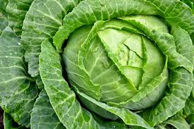

Our Story
Vic Veg Farm is one of the largest producers of quality Cauliflower, Cabbage ,Stripe Egg Plant, Baby Black Egg
Plant , Bull Horn Chilli , Thai Chilli , Beans, Zucchini and Baby broccoli in Australia.
Family owned, we have been farming at Katandra West VIC. Our great location, with its unique soil profile, gives
us cool nights and warm days for the ideal growing conditions.
Cabbage
known for its dense, tightly packed heads of leaves and its use in dishes like coleslaw, sauerkraut, and various global cuisines.

Jalepeno
They are rich in vitamins, particularly vitamin C, and offer health benefits such as antioxidant and anti-inflammatory properties, potential for weight loss
Stripe Egg Plant
They are a good source of vitamins, minerals, fiber, and antioxidants. While their color fades upon cooking, the qualities of their firm texture and mild, sweet flavor are maintained.

Sweet Banana
Looks like a chilli; tastes like a sweet pepper. Sweet Banana capsicums are a surprise. They have the elongated shape you'd expect from a hot chilli, but they have the sweet flavour of bell peppers.

Tomato
Tomatoes are high in nutritional and health-promoting qualities due to being rich in vitamins , minerals, and potent antioxidants like lycopene, beta-carotene, and flavonoids.